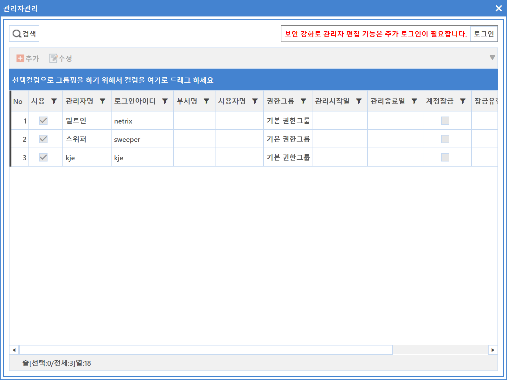
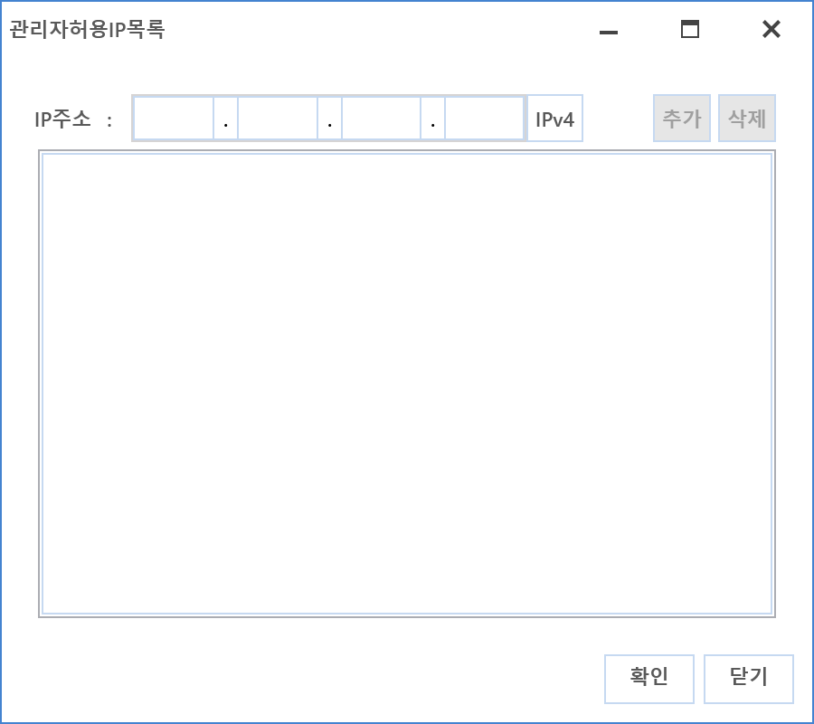
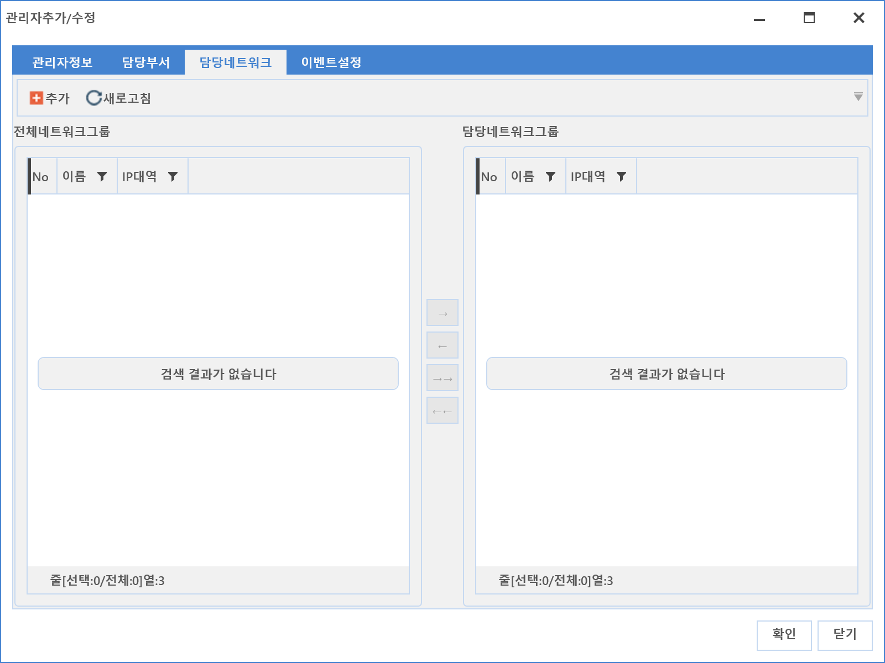
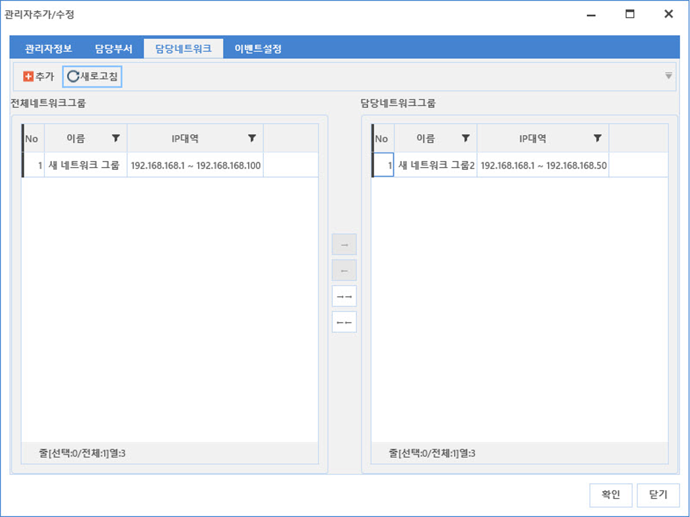
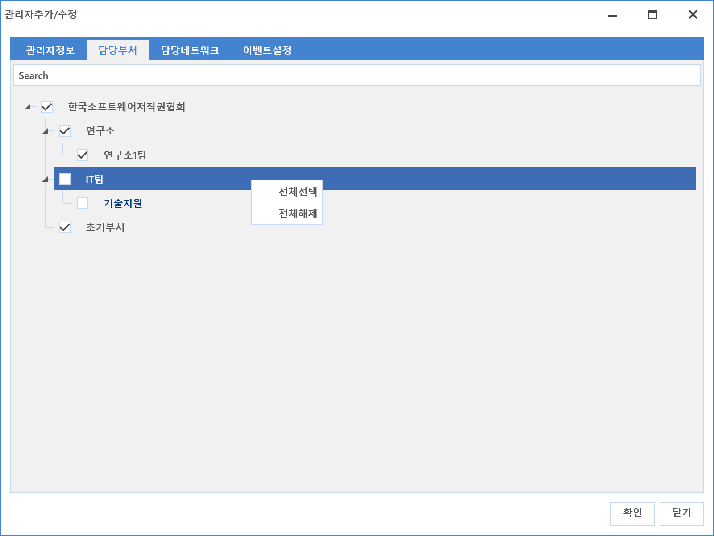

8-1-1. 관리자 관리
8-1-1. 관리자 관리
Source: https://www.sweeper.or.kr/etc/manual/8-1-1.html
8-1-1. 관리자 관리
8. 설정 ›› 8-1. 관리자 설정 ››


SWeeper 콘솔 관리자 접속 계정을 설정할 수 있습니다.


관리자 추가 설정방법
- 추가버튼을 클릭합니다. 관리자 추가/수정 화면이 팝업되면 관리자 정보 Tab 선택 후 해당 정보를 입력합니다.

- 로그인 아이디 : 생성할 계정 아이디를 입력합니다.
- 관리자명 : 사용자 이름을 입력합니다.
- 사용자 : 계정사용자를 찾아 선택합니다.
- 권한그룹 : 해당되는 권한을 선택합니다. 추가 방법은 [권한관리]를 참고하시기 바랍니다.
- 관리자 허용 IP 목록 : 특정 IP에서만 사용할 수 있도록 하는 설정입니다.
지정된 IP를 입력하고 추가버튼을 클릭한 후 등록된 IP를 선택하고 확인 버튼을 클릭하면 됩니다.
 - 관리허용 시작일 : 계정 사용 시작일을 입력합니다.
- 관리허용 종료일 : 계정 사용 만료일을 입력합니다.
-
사용 : 계정 사용 여부를 설정합니다.
-
슈퍼 관리자는 관리자 '사용' 옵션을 변경 할 수 있으나, 일반 관리자는 옵션 변경이 불가능 합니다.
-
일반 관리자는 '사용' 옵션이 해제 된 관리자가 표시되지 않습니다.
-
슈퍼 관리자는 '사용' 옵션이 해제 된 관리자여도 표시 됩니다
-
계정 잠금 : 계정 잠금 설정을 합니다.
-
체크가 되어 있으면 계정이 잠기게 되어 사용할 수 없습니다.
-
계정 잠김이 자동 체크될 경우
-
로그인 연속 실패 : 관리자 로그인 연속실패 5회가 된 경우
-
사용기간만료 : 관리허용종료일이 지난 뒤에 로그인한 경우
-
입력이 완료되면 담당부서 Tab을 선택합니다.

-
담당부서는 관리 대상을 부서에 제한하기 위한 권한 입니다.
-
담당 부서를 선택합니다. 선택이 완료되면 담당 네트워크 Tab을 선택합니다.
 -
담당 네트워크는 관리 대상을 관리 네트워크에 제한하기 위한 권한입니다.
-
추가 버튼을 클릭하여 관리네트워크를 추가하고 추가된 네트워크를 우측 화살표 버튼을 클릭하여 설정합니다.
 -
설정이 완료되면 이벤트 Tab을 선택합니다.

-
이벤트 설정은 특정 이벤트 발생 시 관리자에게 알리기 위한 방법을 설정합니다.
-
알람 : 콘솔에서 알람 메시지가 나타납니다.
-
이메일 : 관리자 계정에 설정된 이메일 주소로 알림 메일을 발송합니다.
-
설정이 완료되면 확인 버튼을 클릭합니다.
- 등록된 관리자 정보를 확인 합니다.
기타 설정방법
대상 관리자를 선택한 뒤 마우스 우클릭하면 설정 가능한 메뉴가 나타납니다.

- 관리자 추가 : 추가 버튼과 같이 관리자를 추가할 수 있습니다.
- 비밀번호 변경 : 비밀번호를 변경합니다.
- 비밀번호 초기화 : 설정된 비밀번호를 netrix로 초기화 합니다
참고사항
-
생성된 계정은 보안 문제로 인해 삭제되지 않습니다. 계정 추가에 주의하시기 바랍니다.
-
비밀번호는 수퍼관리자만 수정이 가능하며 기존의 비밀번호를 확인하는 단계없이 바로 비밀번호를 변경합니다.
수퍼관리자가 아닌 관리자 자신의 비밀번호를 변경하려면 비밀번호 변경 메뉴를 사용합니다.
- 담당부서는 설정된 장비만 보여지며, 장비의 추가/수정시 지정된 권한의 부서만 지정이 가능합니다.
예를들면, 담당부서 아닌 곳에서 장비추가가 가능하지만, 부서 지정시 부여받은 부서만 선택할 수 있습니다.
이는 수정시에도 동일합니다.
- 담당부서 선택시, 우클릭 메뉴에서 특정부서를 한번에 선택하거나, 해제할 수 있습니다.

-
[비밀번호 초기화]는 슈퍼 관리자만 가능합니다.
-
슈퍼관리자는 비밀번호 초기화를 할 수 없습니다.
© Copyright SWeeper Inc.. All Rights Reserved